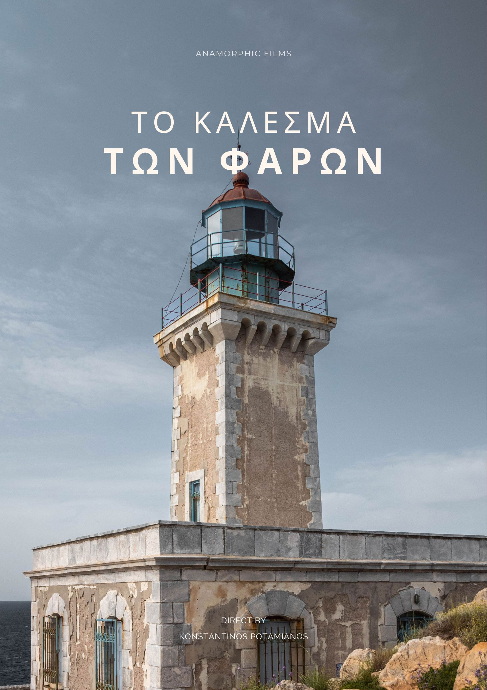

The renovation story of the two southernmost lighthouses in land Europe.

A documentary that describes the story of the renovation of the two southernmost lighthouses in land Europe, from the point of view of the architect who undertook their reconstruction. The project was difficult and full of unexpected incidents, but he and his team managed to complete it successfully.
"I started the preproduction of this documentary in May 2021. I had no idea it would take me so long to complete it in September 2022. This of course resulted in me becoming attached to this project and it became a personal part of me."